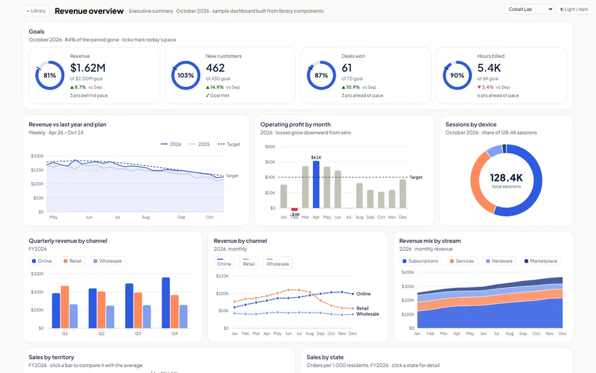
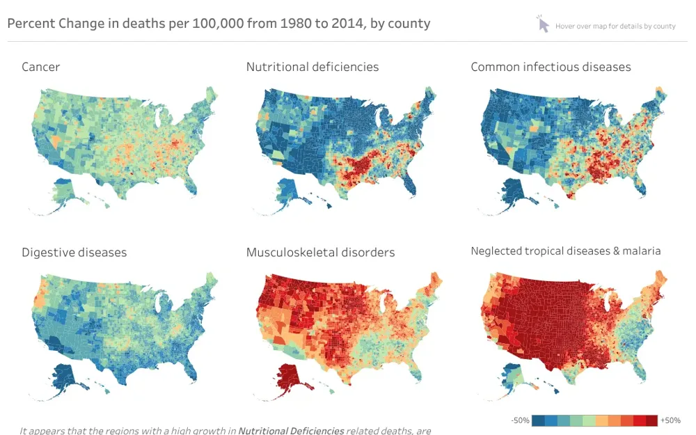
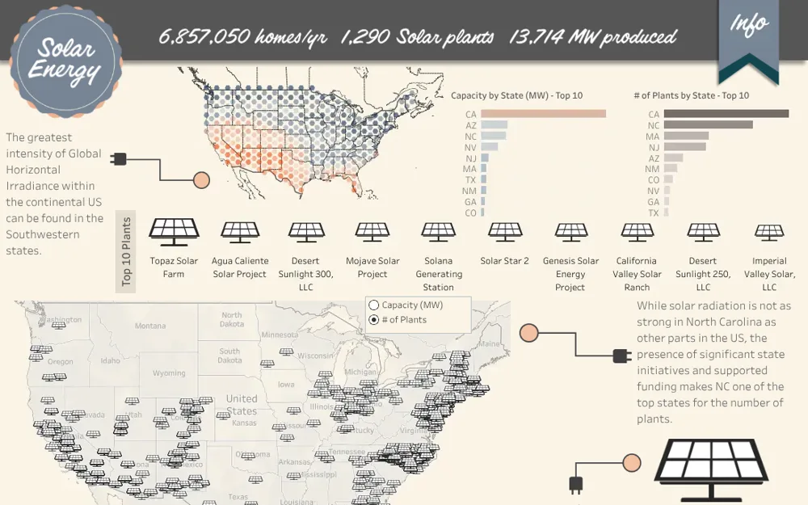
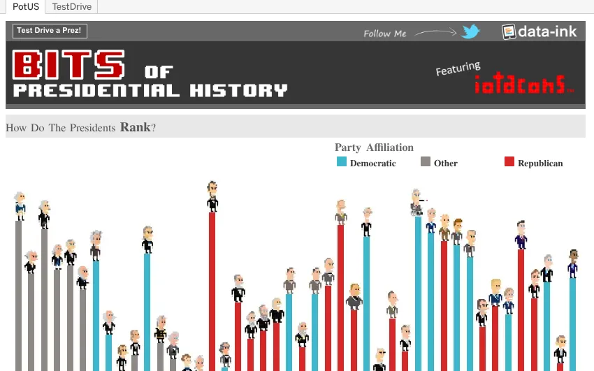
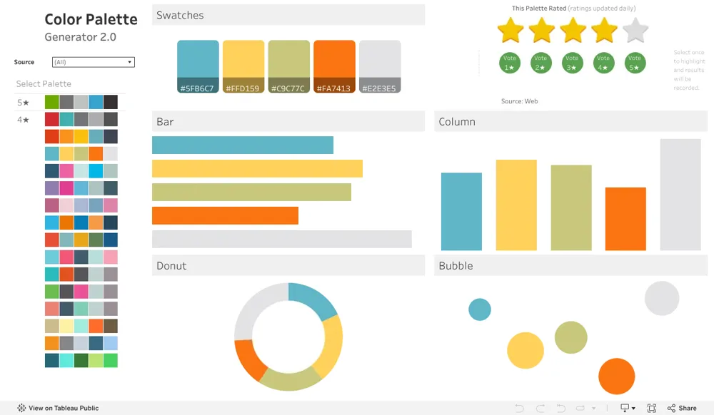
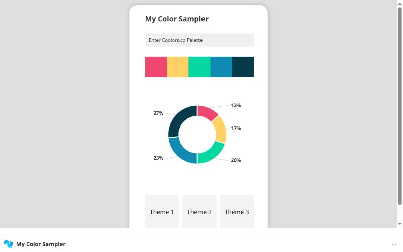

AI Driven Dashboard Component Library
59 dashboard components, each with a spec and a ready-to-paste AI prompt, plus sample dashboards, eleven themes, Excel export and a downloadable Agent Skill for Claude.
Open the library ↗Enterprise Data & Analytics · Data Visualization · Philadelphia, PA
I'm Senior Director of Enterprise Reporting at Optimum. Before that I spent nine years at Comcast, where I built the data visualization team from scratch, scaled the Tableau user base from 400 to 30,000 users, with 2,500 Tableau developers supported, and finished as VP of Enterprise Data & Analytics. For nine years I also taught graduate data visualization at Temple's Fox School of Business.
01 · Featured work
Public work featured by Tableau, plus tools I've built for other dashboard designers. Each card opens the live version.

59 dashboard components, each with a spec and a ready-to-paste AI prompt, plus sample dashboards, eleven themes, Excel export and a downloadable Agent Skill for Claude.
Open the library ↗
County-level small multiples on Albers-projected maps showing how mortality shifted across disease categories. Created with Jake Riley.
Open on Tableau Public ↗
An infographic-style dashboard on US solar plants and generating capacity, featured by Tableau Public for the UN Climate Change Conference 23 (COP23). Created with Shawn Levin.

A Presidents' Day look at US presidents, selected as Tableau Public Viz of the Day.
Open on Tableau Public ↗
Pick swatches and see the palette applied to common chart types, so designers can test colors before they commit.
Open on Tableau Public ↗
A no-code app for testing dashboard color choices, published with a build-along video.
Open the app ↗02 · About
I started as an actuarial analyst at Blue Cross & Blue Shield of Rhode Island and worked up to Director of Government Programs, owning a P&L of roughly $450M covering 65,000 beneficiaries. Since then, what drives me has been the same: using data visualization to drive actionable business decisions.
From there my work has been about making data usable at scale. At Cleartelligence, a startup boutique BI consulting firm, I pioneered its data and dashboarding capabilities across numerous initiatives. Back at BCBS RI I led the move from SAS to Tableau. At Comcast I built a data visualization team from nothing, grew the Tableau user base from 400 to 30,000 users, with 2,500 Tableau developers supported, and went on to lead Enterprise Data & Analytics as VP. Today I lead Enterprise Reporting at Optimum.
I also teach. From 2016 to 2025 I taught the graduate data visualization course I built at Temple University's Fox School of Business, and I share techniques, tools, and experiments with the Tableau community.
03 · Experience
Optimum
Built the data visualization team from scratch. Scaled the Tableau user base from 400 to 30,000 users, with 2,500 Tableau developers supported.
Temple University · Fox School of Business
Built the graduate data visualization course (Excel + Tableau) and taught about 40 students a semester. Expanded it to the online MBA, and the school used it as a promotional demo.
Blue Cross & Blue Shield of Rhode Island
Led the migration of reporting from SAS to Tableau.
Cleartelligence
Pioneered the data and dashboarding capabilities for a startup boutique BI consulting firm across numerous initiatives.
Blue Cross & Blue Shield of Rhode Island
Grew from actuarial analysis to owning a ~$450M P&L covering 65,000 beneficiaries.
MBA & BS, Economics · University of Rhode Island
Tableau Certified Trainer (2016)
Tableau Desktop 9 Qualified Associate (2016)
04 · Skills & tools
05 · Teaching, talks & community
Built and taught the course in Excel and Tableau for about 40 students a semester, then extended it to the online MBA program.
Active in PhillyTUG as a presenter, including Best of Tableau Web (Nov 2015), the January 2016 meetup, and a session with Andy Kriebel.
PhillyTUG Badges viz ↗06 · Contact
Open to conversations about analytics leadership, BI strategy, speaking, and data visualization.